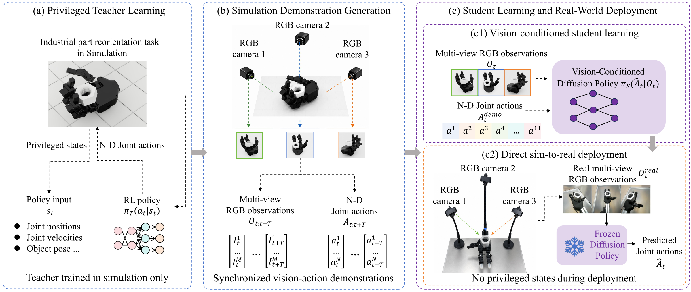
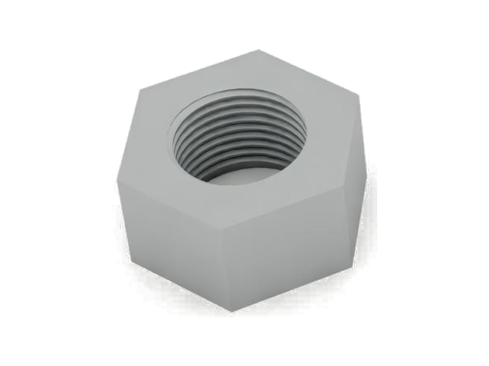
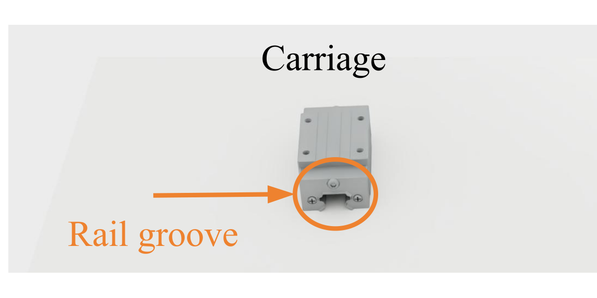
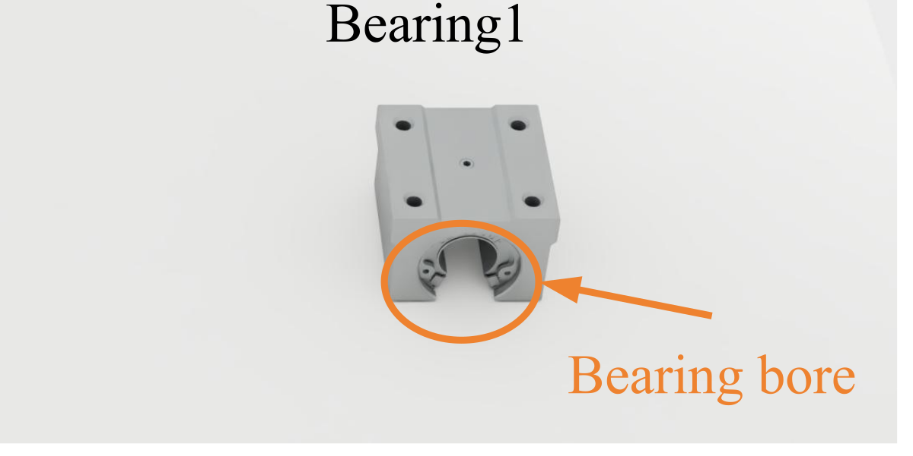
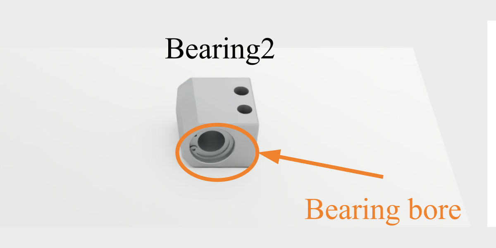
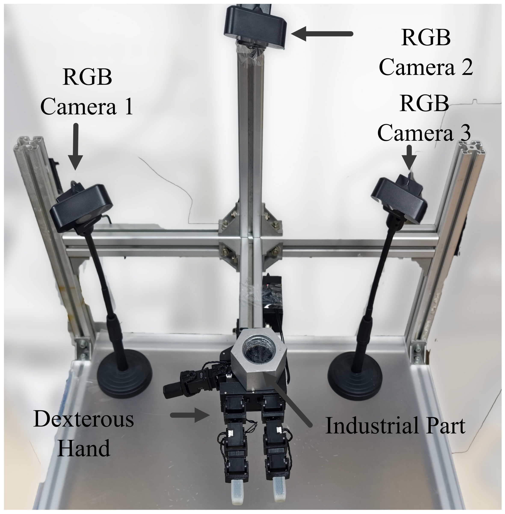
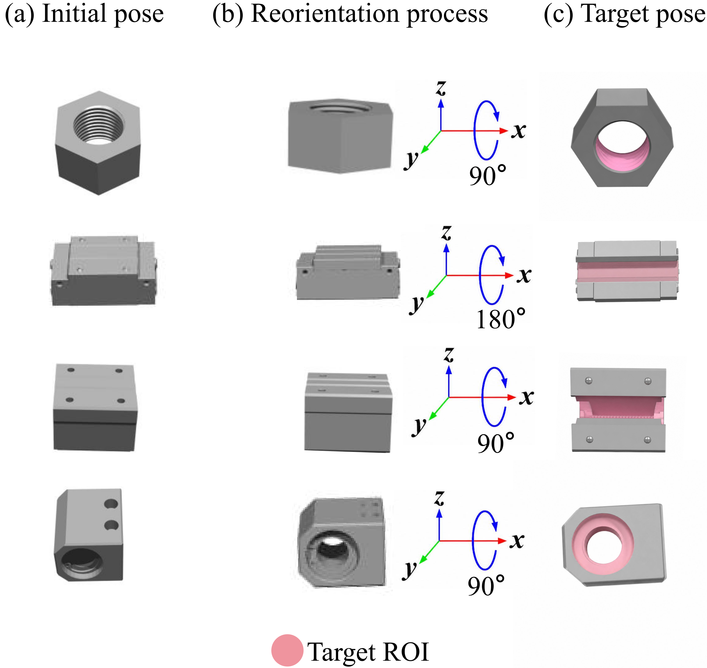
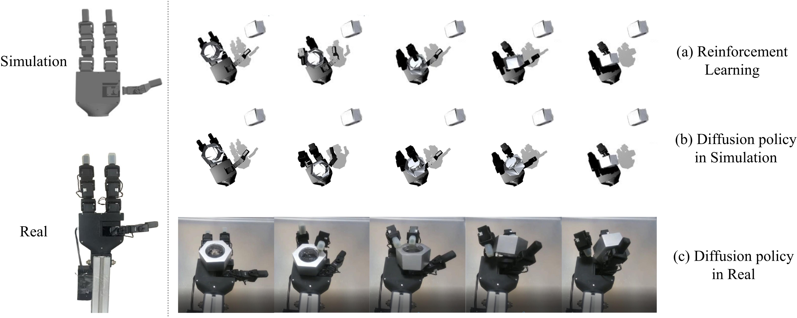

DRIA: Dexterous In-Hand Reorientation for Target ROI Image Acquisition of Complex-Shaped Industrial Parts
Abstract
Visual inspection of industrial parts often requires views of regions hidden from fixed cameras, including internal threads, rail grooves, and bearing bores. DRIA uses a dexterous hand to reorient a grasped part and expose its target region of interest. A privileged reinforcement-learning teacher generates demonstrations in simulation, which train a multi-view vision-conditioned diffusion policy. The frozen student policy transfers to the real hand using RGB observations and lightweight background alignment, without real-world demonstrations, depth sensing, object-pose estimation, or policy fine-tuning. Experiments on four industrial parts demonstrate this approach to active part presentation for visual inspection.
Method

A privileged teacher learns in-hand reorientation in simulation. Its successful trajectories train a diffusion policy, which controls the real hand from three fixed RGB cameras.
Presentation Video
Parts & Experimental Setup
Parts




Experimental Setup

Target poses

Results
Real-world Reorientation
Different Initial Positions
Simulation Recordings
Additional Experiment Figures



BibTeX
@unpublished{sun2026dria,
title = {{DRIA}: Dexterous In-Hand Reorientation for Target {ROI} Image Acquisition of Complex-Shaped Industrial Parts},
author = {Sun, Xin and Wang, Shichuang and Deng, Linan and Hua, Feng and Liu, Xing and Cheng, Jun and Yang, Zhanpeng and Qiao, Xuechun and Cheng, Cheng},
note = {Research manuscript},
year = {2026}
}